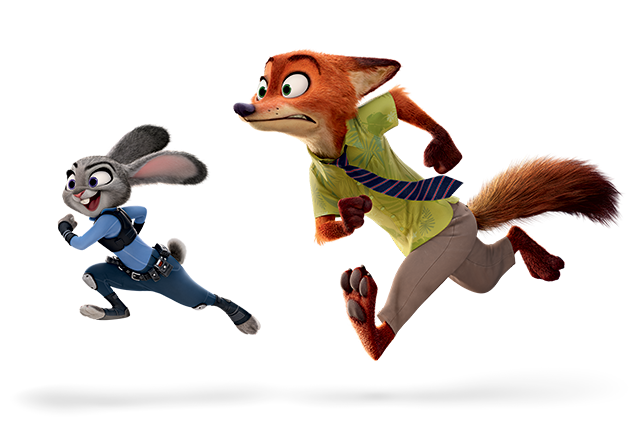
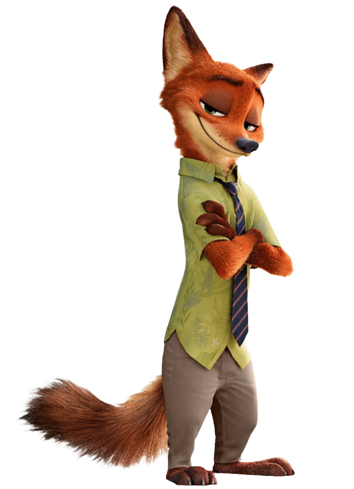

O primeiro e único projeto de Natureza do Design, projeto de alto nível de complexidade por conta de todo o planejamento, testes, feedbacks que deviam ser analisados, um conjunto de tarefas que podem ser curtas ou podem ser longas. O projeto tinha como objetivo que os grupos de alunos criassem algum brinquedo para crianças de 6 a 8 anos que fosse bioinspirado.
Projeto que teve início do começo do semestre sendo apresentado para os grupos, e tendo aulas para que fôssemos capazes de realizá-lo. A dificuldade desse projeto está no conjunto de objetivos que precisavam ser feitos tais como, criar protótipos e testá-los, aprender a interpretar os feedbacks da melhor maneira possível para realizar o projeto.
Estabelecer os objetivos e criar protótipos é apenas uma pequena parte do projeto, testar e iterar pode acabar sendo uma tarefa mais complexa. Nesse projeto há uma necessidade de ver o seu projeto de todas as maneira possíveis, observar de diversas perspectivas, como por exemplo a da criança que usaria, o pai que compraria ou até mesmo o investidor para quem você apresentaria

Durante a apresentação final os grupos levaram seus projetos para um colégio para ver como as crianças os avaliariam, sendo uma atividade divertida de realizar e também muito interessante para testar o seu projeto.
